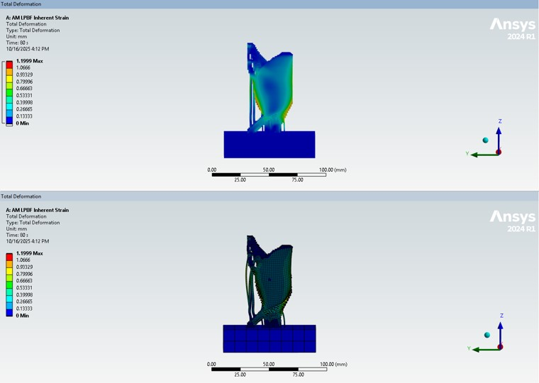
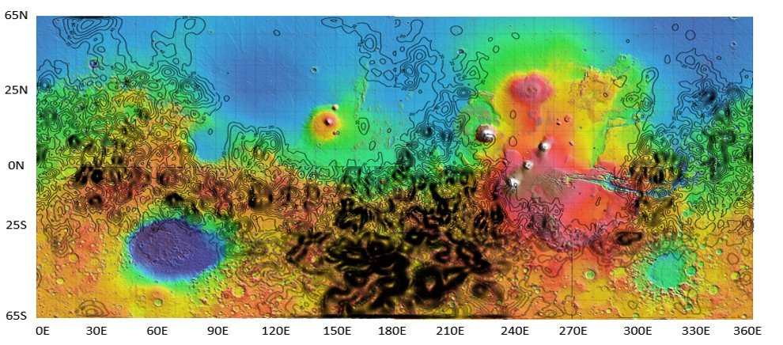

01 / OVERVIEW
Research & Engineering
Through the NASA Space Grant Consortium, I work alongside faculty researchers on projects involving planetary science, computational analysis, and advanced aerospace manufacturing.
Alongside my research, I serve as an Intern Advisor, helping undergraduate research interns navigate research expectations, professional development, and the challenges that come with entering technical research.
02 / HIGHLIGHTED PROJECTS
Research Projects
AI-Assisted Aerospace Design

My current research focuses on validating and refining machine-learning models for structural design and analysis. These models generate topology-optimized (TO) aerospace structures and self-assess their manufacturability for LPBF (laser powder bed fusion).
The generated structures are then evaluated using ANSYS simulations to investigate their structural performance and manufacturability. I compare the simulation results against predictions from the machine-learning model to evaluate the model as a potential surrogate for portions of the traditional optimization and analysis process.
TOOLS: MACHINE LEARNING · TOPOLOGY OPTIMIZATION · ANSYS · LPBF · PYTHON
Mars Crustal Magnetic Fields

During the previous academic year, I worked with Dr. Lon Hood on research investigating the crustal magnetic field on Mars using data collected by NASA's Mars Atmosphere and Volatile EvolutioN (MAVEN) spacecraft.
I worked with approximately eight years of raw magnetometer data, focusing on spacecraft passes through the Martian periapsis (lowest altitude pass) region below approximately 170 km altitude. The objective was to characterize crustal magnetic fields and investigate their relationship to the history of Mars' planetary dynamo and the evolution of its atmospheric shielding.
I developed quality-control plots and Mercator projection maps to process and visualize the magnetic-field data, handling large scientific datasets in HPC environments with Bash. I also used legacy scientific software including Fortran, IDL, and SuperMongo to process, analyze, and visualize the data.
TOOLS: MAVEN · FORTRAN · BASH · SSH · IDL · SUPERMONGO · SCIENTIFIC DATA ANALYSIS
Intern Advisor
I help undergraduate research interns understand research expectations, develop professional habits, and work with faculty mentors and research teams. I also support them in building confidence in technical environments and in communicating their work to both technical and non-technical audiences.
03 / TOOLS & SKILLS